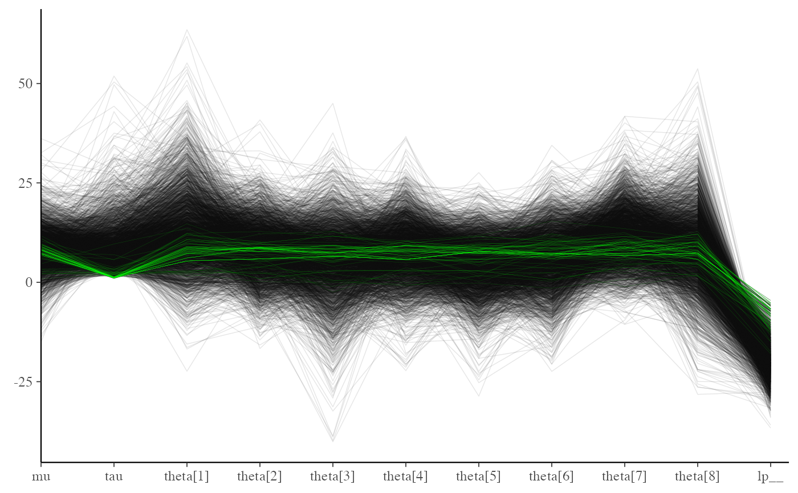
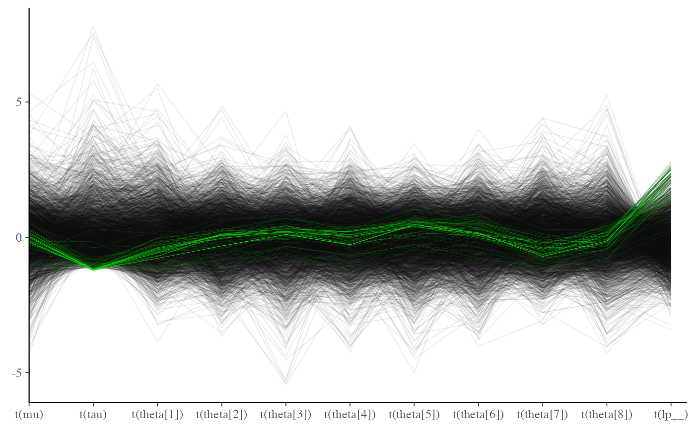

Parallel coordinates plot of MCMC draws
MCMC-parcoord.RdParallel coordinates plot of MCMC draws (one dimension per parameter). See the Plot Descriptions section below for details, and see Gabry et al. (2019) for more background and a real example.
mcmc_parcoord(x, pars = character(), regex_pars = character(), transformations = list(), ..., size = 0.2, alpha = 0.3, np = NULL, np_style = parcoord_style_np()) mcmc_parcoord_data(x, pars = character(), regex_pars = character(), transformations = list(), np = NULL) parcoord_style_np(div_color = "red", div_size = 0.2, div_alpha = 0.2)
Arguments
| x | A 3-D array, matrix, list of matrices, or data frame of MCMC draws.
The MCMC-overview page provides details on how to specify each these
allowed inputs. It is also possible to use an object with an
|
|---|---|
| pars | An optional character vector of parameter names. If neither
|
| regex_pars | An optional regular expression to use for
parameter selection. Can be specified instead of |
| transformations | Optionally, transformations to apply to parameters
before plotting. If Note: due to partial argument matching |
| ... | Currently ignored. |
| size, alpha | Arguments passed on to |
| np | For models fit using NUTS (more generally,
any symplectic integrator),
an optional data frame providing NUTS diagnostic information. The data
frame should be the object returned by |
| np_style | A call to the |
| div_color, div_size, div_alpha | Optional arguments to the
|
Value
The plotting functions return a ggplot object that can be further
customized using the ggplot2 package. The functions with suffix
_data() return the data that would have been drawn by the plotting
function.
Plot Descriptions
mcmc_parcoord()Parallel coordinates plot of MCMC draws. There is one dimension per parameter along the horizontal axis and each set of connected line segments represents a single MCMC draw (i.e., a vector of length equal to the number of parameters). The parallel coordinates plot is most useful if the optional HMC/NUTS diagnostic information is provided via the
npargument. In that case divergences are highlighted in the plot. The appearance of the divergences can be customized using thenp_styleargument and theparcoord_style_nphelper function. This version of the plot is the same as the parallel coordinates plot described in Gabry et al. (2019). When the plotted model parameters are on very different scales thetransformationsargument can be useful. For example, to standardize all variables before plotting you could use function(x - mean(x))/sd(x)when specifying thetransformationsargument tomcmc_parcoord. See the Examples section for how to do this.
References
Gabry, J. , Simpson, D. , Vehtari, A. , Betancourt, M. and Gelman, A. (2019), Visualization in Bayesian workflow. J. R. Stat. Soc. A, 182: 389-402. doi:10.1111/rssa.12378. (journal version, arXiv preprint, code on GitHub)
Hartikainen, A. (2017, Aug 23). Concentration of divergences (Msg 21). Message posted to The Stan Forums: https://discourse.mc-stan.org/t/concentration-of-divergences/1590/21.
See also
Other MCMC: MCMC-combos,
MCMC-diagnostics,
MCMC-distributions,
MCMC-intervals, MCMC-nuts,
MCMC-overview, MCMC-recover,
MCMC-scatterplots,
MCMC-traces
Examples
mcmc_parcoord(x, regex_pars = "beta")#>#>#> #> #> #>#> #> > J <- 8 #> #> > y <- c(28, 8, -3, 7, -1, 1, 18, 12) #> #> > sigma <- c(15, 10, 16, 11, 9, 11, 10, 18) #> #> > tau <- 25 #> #> SAMPLING FOR MODEL 'eight_schools' NOW (CHAIN 1). #> Chain 1: #> Chain 1: Gradient evaluation took 1.5e-05 seconds #> Chain 1: 1000 transitions using 10 leapfrog steps per transition would take 0.15 seconds. #> Chain 1: Adjust your expectations accordingly! #> Chain 1: #> Chain 1: #> Chain 1: Iteration: 1 / 2000 [ 0%] (Warmup) #> Chain 1: Iteration: 200 / 2000 [ 10%] (Warmup) #> Chain 1: Iteration: 400 / 2000 [ 20%] (Warmup) #> Chain 1: Iteration: 600 / 2000 [ 30%] (Warmup) #> Chain 1: Iteration: 800 / 2000 [ 40%] (Warmup) #> Chain 1: Iteration: 1000 / 2000 [ 50%] (Warmup) #> Chain 1: Iteration: 1001 / 2000 [ 50%] (Sampling) #> Chain 1: Iteration: 1200 / 2000 [ 60%] (Sampling) #> Chain 1: Iteration: 1400 / 2000 [ 70%] (Sampling) #> Chain 1: Iteration: 1600 / 2000 [ 80%] (Sampling) #> Chain 1: Iteration: 1800 / 2000 [ 90%] (Sampling) #> Chain 1: Iteration: 2000 / 2000 [100%] (Sampling) #> Chain 1: #> Chain 1: Elapsed Time: 0.078812 seconds (Warm-up) #> Chain 1: 0.040104 seconds (Sampling) #> Chain 1: 0.118916 seconds (Total) #> Chain 1: #> #> SAMPLING FOR MODEL 'eight_schools' NOW (CHAIN 2). #> Chain 2: #> Chain 2: Gradient evaluation took 5e-06 seconds #> Chain 2: 1000 transitions using 10 leapfrog steps per transition would take 0.05 seconds. #> Chain 2: Adjust your expectations accordingly! #> Chain 2: #> Chain 2: #> Chain 2: Iteration: 1 / 2000 [ 0%] (Warmup) #> Chain 2: Iteration: 200 / 2000 [ 10%] (Warmup) #> Chain 2: Iteration: 400 / 2000 [ 20%] (Warmup) #> Chain 2: Iteration: 600 / 2000 [ 30%] (Warmup) #> Chain 2: Iteration: 800 / 2000 [ 40%] (Warmup) #> Chain 2: Iteration: 1000 / 2000 [ 50%] (Warmup) #> Chain 2: Iteration: 1001 / 2000 [ 50%] (Sampling) #> Chain 2: Iteration: 1200 / 2000 [ 60%] (Sampling) #> Chain 2: Iteration: 1400 / 2000 [ 70%] (Sampling) #> Chain 2: Iteration: 1600 / 2000 [ 80%] (Sampling) #> Chain 2: Iteration: 1800 / 2000 [ 90%] (Sampling) #> Chain 2: Iteration: 2000 / 2000 [100%] (Sampling) #> Chain 2: #> Chain 2: Elapsed Time: 0.070061 seconds (Warm-up) #> Chain 2: 0.064413 seconds (Sampling) #> Chain 2: 0.134474 seconds (Total) #> Chain 2: #> #> SAMPLING FOR MODEL 'eight_schools' NOW (CHAIN 3). #> Chain 3: #> Chain 3: Gradient evaluation took 3e-06 seconds #> Chain 3: 1000 transitions using 10 leapfrog steps per transition would take 0.03 seconds. #> Chain 3: Adjust your expectations accordingly! #> Chain 3: #> Chain 3: #> Chain 3: Iteration: 1 / 2000 [ 0%] (Warmup) #> Chain 3: Iteration: 200 / 2000 [ 10%] (Warmup) #> Chain 3: Iteration: 400 / 2000 [ 20%] (Warmup) #> Chain 3: Iteration: 600 / 2000 [ 30%] (Warmup) #> Chain 3: Iteration: 800 / 2000 [ 40%] (Warmup) #> Chain 3: Iteration: 1000 / 2000 [ 50%] (Warmup) #> Chain 3: Iteration: 1001 / 2000 [ 50%] (Sampling) #> Chain 3: Iteration: 1200 / 2000 [ 60%] (Sampling) #> Chain 3: Iteration: 1400 / 2000 [ 70%] (Sampling) #> Chain 3: Iteration: 1600 / 2000 [ 80%] (Sampling) #> Chain 3: Iteration: 1800 / 2000 [ 90%] (Sampling) #> Chain 3: Iteration: 2000 / 2000 [100%] (Sampling) #> Chain 3: #> Chain 3: Elapsed Time: 0.071593 seconds (Warm-up) #> Chain 3: 0.041753 seconds (Sampling) #> Chain 3: 0.113346 seconds (Total) #> Chain 3: #> #> SAMPLING FOR MODEL 'eight_schools' NOW (CHAIN 4). #> Chain 4: #> Chain 4: Gradient evaluation took 4e-06 seconds #> Chain 4: 1000 transitions using 10 leapfrog steps per transition would take 0.04 seconds. #> Chain 4: Adjust your expectations accordingly! #> Chain 4: #> Chain 4: #> Chain 4: Iteration: 1 / 2000 [ 0%] (Warmup) #> Chain 4: Iteration: 200 / 2000 [ 10%] (Warmup) #> Chain 4: Iteration: 400 / 2000 [ 20%] (Warmup) #> Chain 4: Iteration: 600 / 2000 [ 30%] (Warmup) #> Chain 4: Iteration: 800 / 2000 [ 40%] (Warmup) #> Chain 4: Iteration: 1000 / 2000 [ 50%] (Warmup) #> Chain 4: Iteration: 1001 / 2000 [ 50%] (Sampling) #> Chain 4: Iteration: 1200 / 2000 [ 60%] (Sampling) #> Chain 4: Iteration: 1400 / 2000 [ 70%] (Sampling) #> Chain 4: Iteration: 1600 / 2000 [ 80%] (Sampling) #> Chain 4: Iteration: 1800 / 2000 [ 90%] (Sampling) #> Chain 4: Iteration: 2000 / 2000 [100%] (Sampling) #> Chain 4: #> Chain 4: Elapsed Time: 0.071549 seconds (Warm-up) #> Chain 4: 0.036734 seconds (Sampling) #> Chain 4: 0.108283 seconds (Total) #> Chain 4:#> Warning: There were 76 divergent transitions after warmup. Increasing adapt_delta above 0.8 may help. See #> http://mc-stan.org/misc/warnings.html#divergent-transitions-after-warmup#> Warning: Examine the pairs() plot to diagnose sampling problems#> Warning: The largest R-hat is 2, indicating chains have not mixed. #> Running the chains for more iterations may help. See #> http://mc-stan.org/misc/warnings.html#r-hat#> Warning: Bulk Effective Samples Size (ESS) is too low, indicating posterior means and medians may be unreliable. #> Running the chains for more iterations may help. See #> http://mc-stan.org/misc/warnings.html#bulk-ess#> Warning: Tail Effective Samples Size (ESS) is too low, indicatingposterior variances and tail quantiles may be unreliable. #> Running the chains for more iterations may help. See #> http://mc-stan.org/misc/warnings.html#tail-ess#> 'data.frame': 24000 obs. of 4 variables: #> $ Iteration: int 1 2 3 4 5 6 7 8 9 10 ... #> $ Parameter: Factor w/ 6 levels "accept_stat__",..: 1 1 1 1 1 1 1 1 1 1 ... #> $ Value : num 0.999 1 0.857 0.983 1 ... #> $ Chain : int 1 1 1 1 1 1 1 1 1 1 ...#> [1] "accept_stat__" "stepsize__" "treedepth__" "n_leapfrog__" #> [5] "divergent__" "energy__"mcmc_parcoord(draws, np = np)# customize appearance of divergences color_scheme_set("darkgray") div_style <- parcoord_style_np(div_color = "green", div_size = 0.05, div_alpha = 0.4) mcmc_parcoord(draws, size = 0.25, alpha = 0.1, np = np, np_style = div_style)# to use a transformation (e.g., standardizing all the variables can be helpful) # specify the 'transformations' argument (though partial argument name # matching means we can just use 'trans' or 'transform') mcmc_parcoord( draws, transform = function(x) {(x - mean(x)) / sd(x)}, size = 0.25, alpha = 0.1, np = np, np_style = div_style )# mcmc_parcoord_data returns just the data in a conventient form for plotting d <- mcmc_parcoord_data(x, np = np) head(d)#> # A tibble: 6 x 4 #> Draw Parameter Value Divergent #> <int> <fct> <dbl> <dbl> #> 1 1 alpha -14.1 0 #> 2 2 alpha -20.0 0 #> 3 3 alpha -21.0 0 #> 4 4 alpha -36.3 0 #> 5 5 alpha -7.58 0 #> 6 6 alpha -10.4 0tail(d)#> # A tibble: 6 x 4 #> Draw Parameter Value Divergent #> <int> <fct> <dbl> <dbl> #> 1 995 beta[3] 1.04 0 #> 2 996 beta[3] 1.07 1 #> 3 997 beta[3] 0.983 0 #> 4 998 beta[3] 0.821 1 #> 5 999 beta[3] 0.903 0 #> 6 1000 beta[3] 0.858 0